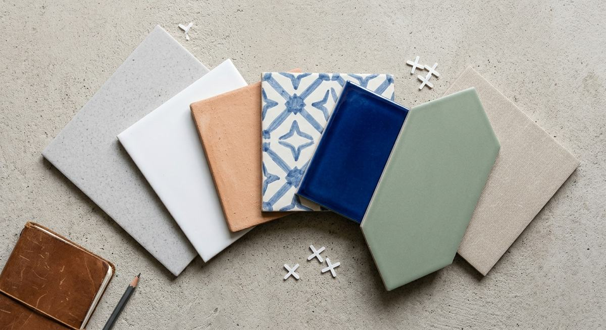
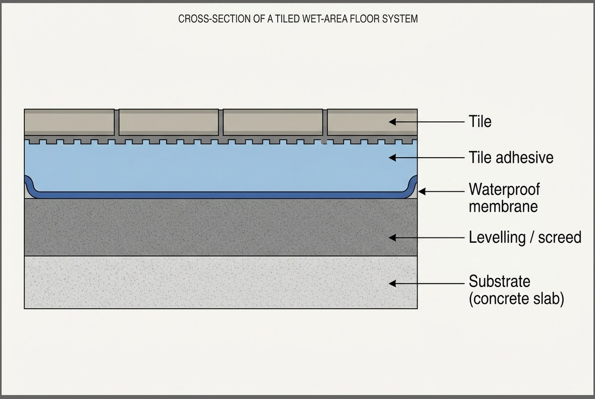

Canberra Tiling Cost Guide
- Free, no-obligation quotes
- Straight answers on what a job actually needs
- Serving Canberra, the ACT and Queanbeyan

Search for what a bathroom costs in Canberra and you will get answers ranging from $9,500 to $120,000. Those are real published figures from real Canberra businesses, all for 2026, all for a main bathroom.
That is not because anyone is lying. It is because "a bathroom renovation" describes about six different jobs, and because most published guides are written by companies quoting their own price band.
This guide gives you the numbers, tells you where each came from, and explains what makes them differ. Then it covers the costs that appear after work starts, and the questions that make three quotes genuinely comparable.
The headline numbers
Tiling, supply and install
| Source | Rate | Scope |
|---|---|---|
| WhatCosts | $55 to $140 per m², average $75 to $100 | Standard floor tiling |
| TradieVerify | $50 to $120 per m², full range $30 to $200 | Standard floor tiling, installed |
| WhatCosts | $85 per m² floor, $95 per m² wall | Bathroom specific |
| Pearl Tiling (Canberra) | $85 per m² labour, $50 per m² tile supply | Bathroom, floor to ceiling |
That last row is the most useful line here, because it is a Canberra tiler's own published rate card rather than a national estimate. Pearl Tiling and Interiors publishes an itemised bathroom cost calculator, and its labour figure of $85 per square metre sits almost exactly on the national bathroom average. Canberra tiling labour is not an outlier.
Wall tiling costs more per square metre than floor tiling, because of the waterproofing preparation behind it and the difficulty of working vertically.
The individual line items
Pearl's Canberra calculator itemises a full bathroom, which is more useful than any range because you can see what each component contributes:
| Item | Pearl (Canberra) |
|---|---|
| Tile supply, floor to ceiling, plus 15% wastage | $50 per m² |
| Tiler labour, floor to ceiling | $85 per m² |
| Sand and cement bed to floor | $700 |
| Waterproofing | $1,200 |
| Silicone, labour and material | $400 |
| Demolition | $1,500 |
| Rubbish removal | $800 |
| Building materials | $600 |
| Margin and project management | 20% |
| GST | 10% |
Note the last two rows. A 20% margin and project management line applied on top, then GST on top of that, means the trade cost and the invoiced cost are meaningfully different numbers. Any guide that ignores this understates by roughly a third.
Preparation and extras
| Item | Range | Source |
|---|---|---|
| Screeding or levelling | $15 to $30 per m² | A Timber Floorer |
| Large format tiles, added labour | $10 to $20 per m² | A Timber Floorer |
| Waterproofing added to a bathroom | $500 to $1,000 | A Timber Floorer |
| Outdoor tiling premium | 10 to 20% on supply and labour | A Timber Floorer |
| Pool tiling, labour only | $60 to $120 per m² | A Timber Floorer |
Repairs
| Repair | Range | Source |
|---|---|---|
| Silicone replacement only | $150 to $350 | The Quote Yard (VIC) |
| Shower regrout, cement grout | $600 to $1,200 | Sparky.fyi |
| Shower regrout, epoxy grout | $800 to $1,500 | Sparky.fyi |
| Shower regrout, general | $600 to $1,500 | Aquatech (Brisbane) |
| Shower base repair | $400 to $1,200 | The Quote Yard (VIC) |
| Drain reseal | $150 to $500 | Antons Renovations (Sydney) |
| Waterproofing repair | $500 to $2,500 | The Quote Yard (VIC) |
| Leak behind shower walls | $500 to $2,500 plus | Antons Renovations (Sydney) |
| Rotted timber remediation | $1,000 to $3,000 plus | Sparky.fyi |
| Shower leak repair, full range | $250 to $4,000 | Sparky.fyi (Sydney) |
The spread in that last row is the whole point. A silicone reseal and a full membrane replacement are both called "leaking shower repair" and they differ by more than ten times. Which one you need is a diagnosis, not a preference. See leaking shower repair.
Bathroom renovation in Canberra
This is where published figures fall apart, so here they are side by side. All 2026, all for a main bathroom in Canberra unless noted.
| Source | Figure |
|---|---|
| Housing Industry Association (national average) | Around $26,000 |
| Creating Impressions | $18,000 to $35,000, most between $19,000 and $25,000 |
| Apex Bathroom Renovations | $18,000 to $35,000, average $24,000 to $28,000 |
| Refined Building | $25,000 to $35,000, most around $30,000 |
| What's The Damage | $9,500 to $43,000 plus |
| The Bathroom Co | $40,000 to $50,000 |
| Rentoule Projects | $25,000 to $40,000 entry, $40,000 to $65,000 mid, $70,000 to $120,000 plus luxury |
Three Canberra builders describing a mid-range main bathroom in the same year give $24,000, $30,000 and $50,000.
Why the numbers disagree so much
Understanding this is worth more than any single figure.
They describe different scopes. A cosmetic refresh keeping the layout, the plumbing and the existing waterproofing is a fundamentally different job from a full strip-out back to the studs. Both get called a bathroom renovation. Thinking in tiers rather than averages is the only way the range makes sense.
They reflect who is writing. A high-end builder's typical bathroom genuinely is more expensive than a general builder's, because they are describing their own client base. Neither is wrong about their own work. Both are wrong as a general answer.
Some numbers are not real. Programmatic cost-guide sites that publish a "from" price for every trade in every city produce figures with no relationship to any actual job. Treat a suspiciously low starting figure as a lead-capture device rather than data.
Fixtures move the total more than tiling does. Pearl's Canberra calculator allocates $14,250 to supply of tapware, bath, toilet, vanity, floor wastes, shower screen, shower head and mirror. That single line exceeds the entire tiling component of most bathrooms. Two bathrooms with identical tiling can differ by twenty thousand dollars on fixture selection alone.
Labour is roughly half. Rentoule Projects puts labour at 40 to 50% of total project cost. That ratio matters when deciding where to economise, because material savings have less leverage than most people assume.
Why "cost per square metre" is misleading
It is the figure everyone searches for, and on its own it is close to useless.
Small rooms cost more per square metre, not less. A bathroom floor is mostly edges, cuts and detail around a floor waste, a vanity, a hob and a door frame. The productive middle where a tiler lays quickly is a small fraction of it. Australian market guidance puts a small 5 to 8 square metre bathroom at roughly $2,000 to $3,500 for tiling including materials, a far higher effective rate than any headline figure implies, because fixed costs do not shrink with the floor.
The same logic applies to ensuites. A 2 square metre ensuite still needs the same waterproofing, the same licensed plumbing and electrical work, and the same trades through the door as a larger room. You save on tile area and fixtures, not on the process.
The rate rarely includes preparation. Levelling, screeding, removing old adhesive and repairing the substrate are usually separate, and on a renovation they are frequently the largest single line.
Use a per-square-metre rate to sanity check a quote you already have. Do not use it to build a budget.
What actually drives the cost
The tile itself
Size. Large format tiles need a flatter substrate, because any deviation shows up as lipping at the edges. That often means levelling a smaller tile would not have needed, and it adds $10 to $20 per square metre to labour on top of base rates. At the other extreme, mosaics are slow, because you handle many more sheets and finish far more linear metres of grout joint per square metre.
Material. Porcelain is denser and harder than ceramic, so cutting is slower and blade wear higher. Natural stone commands a premium because each piece is unique, it needs specialist handling, and it requires periodic sealing that adds to lifetime cost.
Edge type. Rectified tiles have a machine-cut edge allowing a narrow, precise joint. Achieving that precision takes longer than laying a cushioned-edge tile that tolerates small variation.
Availability. Imported tiles carry longer lead times. A discontinued line means running short becomes a serious problem rather than an inconvenience.
The layout
Straight-set is the baseline. Every other pattern adds cuts, and cuts add time and waste.
Offset and brick patterns are a small step up. Herringbone and chevron are a large one, because nearly every perimeter tile is a cut and the setting out has to be exact from the first tile or the error compounds across the room.
The substrate, which is where the real money is
Floors are rarely level, and bringing one within tolerance may need self-levelling compound or a screed at $15 to $30 per square metre. How much is unknown until the old covering is off.
A concrete slab, a timber floor and a sheeted wall are three different preparation jobs. Old adhesive, old screed and old waterproofing all have to be dealt with, and removing tile adhesive from a slab is slow, dusty work usually quoted separately.
Water damaged framing behind a shower has to be replaced before anything is tiled over it, and that runs $1,000 to $3,000 or more on its own. It is discovered during demolition, not during the quote.
Wet areas

Waterproofing in domestic wet areas is governed by AS 3740:2021 Waterproofing of Domestic Wet Areas, the current (fifth) edition, which superseded AS 3740-2010.
AS 3740:2021, Standards Australia.
Unlike builders, electricians and plumbers, waterproofing is not its own licensed trade in the ACT — it does not appear on Access Canberra's list of licensed construction occupations. What is regulated is the outcome: wet area waterproofing details must be submitted as part of the building approval for Class 1 residential work, and Access Canberra has specifically flagged incorrect or undocumented wet area waterproofing as a compliance problem (Construction Note 01/2023, Wet Areas, updating 2022/13). A building surveyor requires waterproofing documentation before signing off tiling, and undocumented or non-compliant waterproofing can trigger a Stop Work Notice under the Building Act 2004.
Access Canberra, Construction Note 01/2023 – Wet Areas; Building Act 2004 (ACT).
In practice that still means: whoever applies the membrane should be someone who can produce that documentation, whether they hold a trade qualification, a manufacturer accreditation, or both.
The standard also sets a minimum fall to waste of 1:80 in shower areas, and membranes require a cure period of at least 24 to 48 hours before tiling. Cure times extend in cold weather, a real scheduling factor in a Canberra winter.
Waterproofing typically adds $500 to $1,000 to a bathroom. Pearl's Canberra calculator allows $1,200.
Access, site conditions and sequencing
Upstairs work, narrow access, no parking and restricted hours in an apartment all cost time. Working around a family using the space is slower than working in an empty house.
Tiling sits in the middle of a renovation. If the trades before it are not finished, the tiler either waits or comes back, and return visits are priced accordingly. A well sequenced job is cheaper to tile than the same job coordinated ad hoc.
The costs people do not budget for
You buy more tile than the floor area. Pearl builds in 15% wastage. General Australian guidance suggests ordering an extra 10 to 15% for breakage and future repairs, more for diagonal and herringbone layouts. Keeping spares matters because tile lines get discontinued and dye lots vary.
Removal and disposal. Old tiles are heavy and tip fees are usually charged by weight. Pearl allows $1,500 for demolition and $800 for rubbish removal on a bathroom. These are frequently separate lines and sometimes missing entirely.
What demolition reveals. Rotted framing, a slab further out of level than expected, or failed previous waterproofing. The most common variation on any bathroom job.
Asbestos in older homes. WorkSafe ACT treats a residential building constructed or refurbished before 1990 as likely to contain asbestos containing material, and the ACT carries additional legacy issues including Mr Fluffy affected blocks. If present, only a licensed asbestos assessor can identify it, and only a licensed asbestos removalist can remove it in the ACT — there's no small-quantity DIY exemption here.
WorkSafe ACT, Asbestos; WorkSafe ACT, Asbestos licensing.
Trims and edging. External corners and tile edges need either a mitre or a trim. Inexpensive, frequently omitted from quotes, and the mitred alternative is labour.
Grout upgrades. Epoxy grout runs $800 to $1,500 for a full shower regrout against $600 to $1,200 for cement based. It lasts roughly twice as long and resists mould without sealing.
Sealing. Natural stone and cement based grout both benefit from sealing, a separate product and a separate visit.
Making good. Plastering, cornice repair and painting after tiling and demolition. Not the tiler's scope, and easy to leave out of a budget entirely. Pearl allows $2,500 for plastering and $500 for painting.
Other trades. Pearl's Canberra figures allow $3,000 for plumbing labour and $700 for electrical. An old shower screen usually cannot be refitted to new tiles, so budget replacement rather than reuse.
Margin and GST. A project management margin and then GST apply on top of the trade cost. On Pearl's structure that is 20%, then 10%.
How to get a quote you can rely on
The goal is not the lowest number. It is three quotes describing the same job.
Give every quoter the same brief
Same tile, same size, same layout, same scope, in writing. If one is pricing herringbone in large format porcelain and another has assumed straight-set ceramic, the comparison is meaningless before anyone has done anything wrong.
Ask what is included, line by line
- Demolition, removal and disposal, including tip fees
- Substrate preparation, levelling and screeding
- Waterproofing, and who certifies it
- Tile supply, or is that yours
- Adhesive and grout, and which type
- Trims and edging
- Silicone to junctions
- Sealing
- Final clean and rubbish removal
Ask how variations are handled
The most important question here, and the one most people skip.
What happens if the substrate is worse than expected. Are variations priced at an agreed rate or quoted at the time. Does work stop for your approval before extra cost is incurred. A quote that anticipates this comes from someone who has been caught by it before, which is a good sign.
Ask about the tile order
Who is measuring, what waste allowance is assumed, and who is responsible if the order falls short.
Ask about the schedule
How many days, how many visits, what has to be finished first, and how long the waterproofing needs to cure. A typical Canberra bathroom renovation runs three to five weeks, longer for complex work.
For repairs, ask for the diagnosis before the price
A shower repair quote should name the diagnosed cause: grout failure, silicone failure, membrane failure, waste seal failure, or a supply pipe leak. A quote arriving without anyone having established where the water is going is a guess with a price on it. If regrouting or injection sealing has already been tried and the leak returned, the membrane has failed and a surface repair will not fix it.
Take a list with you
All of the above is set out as a printable tiling quote checklist, so you can take the same questions to each quote and write the answers next to them.
Budgeting sensibly
Hold a contingency. Something almost always turns up during demolition. A contingency is the difference between a variation being an inconvenience and being a crisis.
Understand what the cheapest quote is cheaper at. Sometimes lower overhead. Often narrower scope, thinner preparation, or an assumption that becomes a variation later.
Spend where failure is expensive. Waterproofing and substrate preparation are concealed, and they cost the most to put right afterwards because fixing them means removing the finished surface. Tile is visible and replaceable. If the budget has to give, give on the tile.
Fixtures are the biggest lever. Pearl's $14,250 fixture allowance exceeds the tiling cost on most bathrooms. Changing tapware and vanity selection moves the total further than any tiling decision.
Keep the plumbing where it is. Moving a toilet, shower or vanity is consistently identified as one of the largest avoidable costs, and in the ACT relocating plumbing may require a drainage plan and building approval.
How much does a tiler charge per square metre in Australia?
Published national rates for standard floor tiling supply and install run roughly $55 to $140 per square metre, with most sources putting the average around $75 to $100. Bathroom floor tiling sits near $85 and wall tiling near $95, the difference reflecting waterproofing preparation. A Canberra tiler's published labour rate of $85 per square metre for bathroom work sits squarely on that national average.
Why are my tiling quotes so different?
Almost always because they cover different scopes. Preparation, demolition, disposal, waterproofing and trims are the usual variables. Ask each quoter to itemise against the same written brief and most of the gap becomes visible.
Is it cheaper to tile a small bathroom than a large room?
In total yes, per square metre usually no. Small wet areas are dominated by cuts, edges and detail around penetrations. A small bathroom often lands around $2,000 to $3,500 for tiling including materials, a much higher effective rate than the headline figures suggest.
What does it cost to regrout a shower?
Roughly $600 to $1,500 for a standard shower, with cement based grout at the lower end and epoxy at the upper. Epoxy costs more and lasts roughly twice as long without needing sealing. See regrouting.
What does a leaking shower cost to fix?
Anywhere from around $250 for a silicone reseal to $4,000 for a full strip-out and membrane replacement. The difference is entirely about what has failed. If water is reaching rooms outside the bathroom, the membrane has gone and a surface repair will not hold.
Should I supply my own tiles?
It gives you control over price and selection, but responsibility for measuring, ordering enough and dealing with breakage moves to you. Agree in writing who carries that risk.
Does the tile I choose change the labour cost?
Substantially. Size, hardness, edge type and layout pattern all affect installation time independently of the tile price. Large format adds $10 to $20 per square metre in labour alone.
Is waterproofing a place to economise?
No. It is regulated, it is concealed once tiling starts, and correcting it later means removing the finished surface.
Is tiling in Canberra more expensive than other cities?
On the labour evidence available, no. A Canberra tiler's published bathroom rate matches the national average closely. Renovation totals in Canberra do skew higher, which local builders attribute to ACT labour rates, compliance requirements and the age of the housing stock, though that is their claim rather than independent data.
Sources
Published on the page so readers can check the figures.
- Pearl Tiling and Interiors bathroom cost calculator, Canberra: pearltiling.com.au
- Housing Industry Association, national bathroom renovation average
- WhatCosts tiling and bathroom renovation pricing
- TradieVerify Australian tiling cost guide
- A Timber Floorer tiling cost per m² guide
- Sparky.fyi shower repair cost guide
- The Quote Yard shower regrouting and leak repairs, Victoria
- Aquatech Grouting shower regrouting, Brisbane
- Antons Renovations shower leak repair guide, Sydney
- Canberra renovation figures: Creating Impressions, Apex Bathroom Renovations, Refined Building, The Bathroom Co, Rentoule Projects, What's The Damage
- AS 3740:2021 Waterproofing of Domestic Wet Areas, Standards Australia
Most published tiling cost guides are themselves lead-generation content, including several cited above. The two most reliable anchors here are Pearl's Canberra calculator, a real operator's own rate card, and the HIA national average — everything else is presented as a range with its source named so it can be weighted accordingly. None of these figures are presented as our own data.
Working out a budget for a Canberra tiling job
Tell us what you are planning, what is there now, and whether the space is being stripped back or worked around. Those three things determine most of what a job costs.
Get a QuoteCall (02) 6105 9990